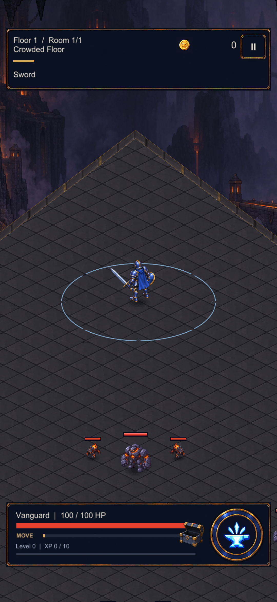

6 kat yüzey alanı, aynı karakter boyutu ve takip kamerası. İlk gerçek Unity yürüyüş denemesi.

Geçici Unity test sahnesi. Henüz keşif karşılaşmaları veya bitmiş çevre sanatı değil; telefonda ölçülmedi.
Gerçek yürüyüş süreleri
| Etap | Süre |
|---|
| Merkez → doğu | 6,78 s |
| Doğu → kuzey | 18,53 s |
| Kuzey → batı | 18,55 s |
Etaplar art arda yüründü; sonraki etaplarda hareket barı yeniden doldurulmadı. Mevcut hız ve dayanıklılık kuralları korundu.
Şimdi görünen iki ihtiyaç
Keşif temposu: uzun boş yürüyüşleri anlamlı karşılaşma ve buluntularla doldurmak; savaş dışı hareketi ayrıca değerlendirmek.
Zemin: taşlar artık harita büyüse de aynı ölçekte döşeniyor. Sırada kenar modülleri ve fırın/vinç işaretleri var.
Eski düğümlü harita planı güncellendi. Döküm Avlusu geniş bölgenin içindeki bir yer olacak; ayrı boss salonu ve isteğe bağlı final hedefi korunuyor.
Yeni yön · Kanıt ve sınırlar